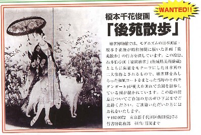

WANTEDと云えば、西部劇の定番。賞金付きで情報提供を呼びかけるモノ。最近は日本でもひき逃げ犯などの情報を得るために、行われるようになった。
その賞金付きWANTEDが、麻雀で２件行われている。一つは昭和３年、菊池 寛が関西の麻雀団体発足にあたり出した手紙というか、記念の文章（ココ参照）。さすがは文豪、非常に名文で、いまなお人口に膾炙されている。
ところが、肝心のこの手紙が行方不明。そこで歴史的にも価値のあるこの手紙を、麻雀博物館が賞金付きでWANTEDしている（別冊近代麻雀の記事）。


ただし賞金100万円といっても、これは手紙に関する有益情報料ではなく、いわば譲渡価格。そこで有益情報を提供した人にもそれなりの謝礼はあるとしても、100万円にはならない。
しかし譲渡価格としても、100万円は破格の値段。普通の菊池寛の私信なら、この10分の１にもなるかどうか。この手紙に対する、博物館というか野口会長の気持ちが推し量られる。
情報は住所氏名や電話番号などを記載した葉書を下記宛にほしいとのこと。
〒299-4502 千葉県夷隅郡岬町中原１−２ 麻雀博物館「麻雀賛」係
もう一つが博物館会報７号に載っていたWANTED。

これは榎本千花俊が昭和初期に描いた「後苑散歩」と題する日本画。当時のモガ（モダンガール）が、麻雀牌をあしらったコートを着て散策している姿を描いたモノ。
大正15年、石井柏亭が、子供が麻雀している油絵を描いている。歴史的にはその方が古い。しかし石井柏亭の絵は、いうなら岸田劉生風の日本画。しかし「後苑散歩」は見たとおり美しい。
同じWANTEDでも、こっちは「情報の提供には謝礼を」とあるだけで、譲渡価格うんぬんという記載はない。もちろん実際に所有している人が名乗り出ればそういう話になるにしても、最初から金額を提示するには、ちと大物すぎるということだろうか。
こちらの方の連絡は下記へ
〒102-0072 千代田区飯田橋２７−３ 竹書房総務部 担当 月岡
いずれにしても、どっちも行方不明と云うより、戦災で消失している可能性も大いにあるなぁ....
|